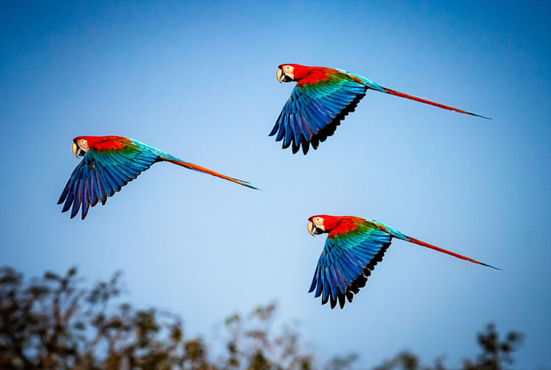

Estas aves exóticas dividem-se em 17 subespécies, algumas das quais estão em perigo de extinção, devido ao comércio ilegal e à destruição do seu habitat. De plumagem marcante, de muitas cores, têm garras fortes e um bico em forma de gancho e uma língua com ossos, para partir frutas e cascas.
O corpo desta ave está pronto para viver na floresta, não só por suas penas multicoloridas, que se confundem com a vegetação abundante, mas também pelas garras fortes que a permitem agarrar-se bem aos galhos das árvores.
Para saber mais sobre assunto tratado basta